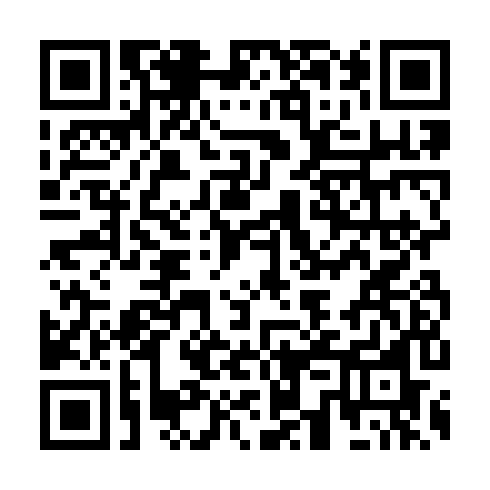

Currently it serves
1
apps. To add it to your F-Droid app, scan the QR code (click it to enlarge) or use this link:
https://nauss.github.io/chop-torch/fdroid/repo
If you would like to manually verify the fingerprint (SHA-256) of the repository signing key, here it is: